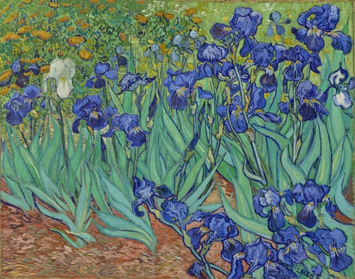

Noite Estrelada, 1889
Embora pintada de memória, esta obra-prima retrata a vista do lado de fora da janela do sanatório de Van Gogh, em Saint-Remy-de-Provence, na França. O artista optou por entrar nesse local após episódios de automutilação e hospitalização. A obra mostra o interesse do artista pela astronomia. Um estudo feito pelo Griffith Park Observatory demonstrou que Van Gogh representou a Lua, Vênus e várias estrelas na posição exata em que ocupavam aquela noite clara. É considerada uma das maiores obras da arte ocidental.
Lírios, 1889
Em Saint-Rémy, Vincent Van Gogh criou quase 130 pinturas. Na primeira semana, começou a pintar “Irises” (Lírios), trabalhando a partir da natureza no jardim do asilo.
Os Comedores de Batata, 1885
Esta pintura foi a primeira grande obra de Van Gogh. Seu intuito era fazer os camponeses parecerem “ter lavrado a terra com essas mãos que eles estão colocando no prato” da maneira mais realista possível. Nas palavras do pintor para sua irmã: “O que eu penso sobre o meu próprio trabalho é que a pintura dos camponeses comendo batatas que eu fiz em Nuenen é afinal de contas a melhor coisa que fiz”.
Os Girassóis, 1889
Van Gogh é considerado um mestre das pinturas de naturezas-mortas e sua série sobre “girassóis” está entre as mais famosas desse tema. Elas são bem conhecidas por retratar a beleza natural das flores e por suas cores vibrantes. Essa obra quebrou o recorde de leilão de uma pintura quando foi vendida a um investidor japonês por quase US $40 milhões em março de 1987.
Autorretrato, 1889

Último dos autorretratos pintados por ele enquanto esteve internado no asilo de Saint-Rémy. Embora o azul e o verde apareçam com bastante frequência em suas obras, as cores não foram escolhidas por acaso: a soma dos tons do fundo unidos às curvas na parede formam uma imagem tensa, que transmite a confusão mental do pintor. Seu rosto destaca-se pela barba ruiva, pelos traços tensos e pelo olhar fixo que sugerem uma introspecção, como se estivesse tão concentrado em seus próprios pensamentos que acabou “esquecendo” seu olhar numa direção qualquer.
O quarto em Arles, 1888

Esta pintura é a primeira versão de três pinturas semelhantes que são referidas como “Bedroom in Arles” (Quarto em Arles) e foram simplesmente intituladas The Bedroom by Vincent. As três pinturas podem ser diferenciadas pelas figuras penduradas na parede à direita. Esta versão tem miniaturas de retratos de Vincent Van Gogh de seus amigos Eugene Boch e Paul-Eugene Milliet na parede da direita na pintura. O tema da obra é o quarto de Van Gogh no Place Lamartine em Arles, Bouches-du-Rhone, na França, famosa como sua Casa Amarela.